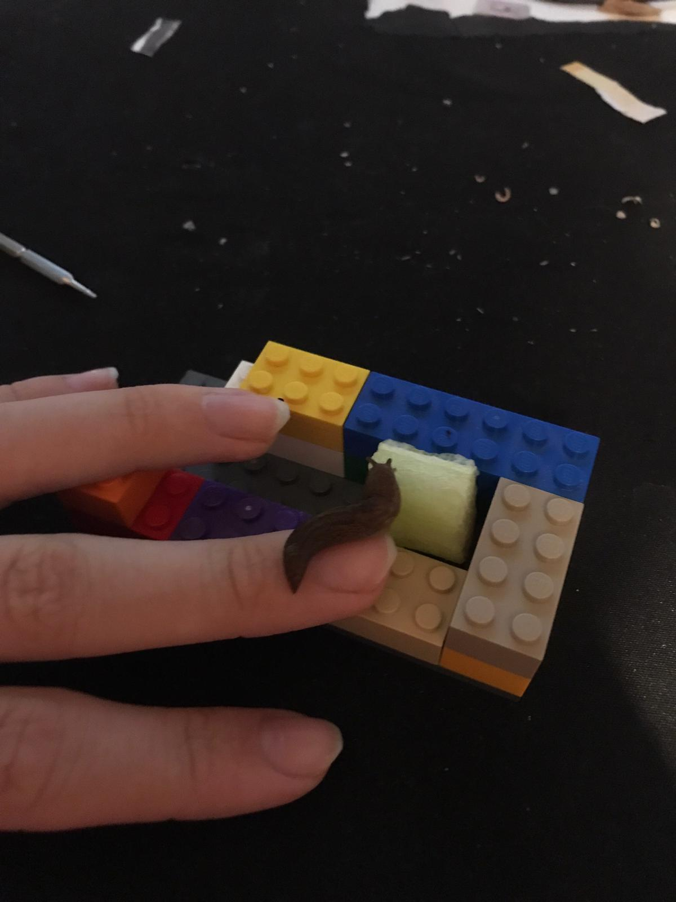

This week has been a bit of a rollercoaster, with ups and downs emotionally and physically.
But overall, I think I'm doing okay. I've been struggling with my mental health a bit, but I'm trying to stay positive and focus on the good things in life.
I've been looking after some slugs; I noticed she has babies the same night my uncle died. 
I'm a bit sad that I didn't get the opportunity to spend more time with him, but I'm glad I saw him in Spain this summer.
He wouldn't want me to be sad, so I'm not, to be honest.
I know it's all a part of the life and death cycle, and it's something we all have to go through.
It's very natural, and I'm trying to embrace it.
I love you, Mike. It always makes me smile when I think of you.
On a lighter note, my pet slug is called Mama Cas. I don't quite have a name for the babies yet, but I think I'll let one of my friends name them also at the time of writing she is laying some eggs on the plastic
 >
>
i have no idea if to keep them or to give them away or put them in the compost out side im thinking of keeping them tho or giving them to some to frends .

I hope you all like my website! I made it myself, and I'm quite proud of it. I stripped it back to basics and made it simple and easy to navigate. I removed the download page as I never used it, and it was just a bit of a mess.
So now it's just home, projects, photos, and blog.